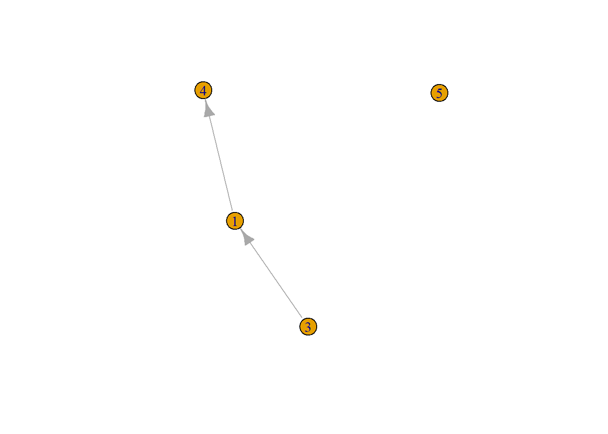

3 Basic network analysis in R
In this tutorial we’ll use the igraph package to do some basic descriptive social network analysis. Obviously, we can only scratch the surface here, and many research project will require different analyses. Also, we do not cover visualization specifically.
As an example network, we’ll use the famous “karate club” data studied by Zachary (1977), included with igraph.
## IGRAPH 9e7c550 U--- 34 78 -- Zachary
## + attr: name (g/c)
## + edges from 9e7c550:
## [1] 1-- 2 1-- 3 1-- 4 1-- 5 1-- 6 1-- 7 1-- 8 1-- 9 1--11 1--12
## [11] 1--13 1--14 1--18 1--20 1--22 1--32 2-- 3 2-- 4 2-- 8 2--14
## [21] 2--18 2--20 2--22 2--31 3-- 4 3-- 8 3--28 3--29 3--33 3--10
## [31] 3-- 9 3--14 4-- 8 4--13 4--14 5-- 7 5--11 6-- 7 6--11 6--17
## [41] 7--17 9--31 9--33 9--34 10--34 14--34 15--33 15--34 16--33 16--34
## [51] 19--33 19--34 20--34 21--33 21--34 23--33 23--34 24--26 24--28 24--33
## [61] 24--34 24--30 25--26 25--28 25--32 26--32 27--30 27--34 28--34 29--32
## [71] 29--34 30--33 30--34 31--33 31--34 32--33 32--34 33--34
This looks like an undirected network, which we can verify using:
## [1] FALSE3.1 Network level: a “five number summary”
A good starting point of any network analysis project is to look at some basic properties of the graph as a whole. While there are many potentially interesting properties, we’ll focus here on the the “five number summary” as suggested by Luke (2015).
3.1.1 Size
Probably the most basic property of a network is its size, that is, the number of vertices and the number of edges. While igraph already reported them above (if you knew where to look), we can ask for these numbers specifically:
## [1] 78## [1] 343.1.2 Density
The density of a network is the ratio of existing edges and the maximum possible number of edges that could exist, given the number of vertices. We can let R calculate it for us:
## [1] 0.1390374Obviously, we could already have calculated this ourselves, given that we already knew the number of edges and the number of vertices.
QUESTION: How would you calculate density using ecount() and vcount()?
If desired, we can also add such network-level results to the network object, for later use:
## IGRAPH 9e7c550 U--- 34 78 -- Zachary
## + attr: name (g/c), density (g/n)
## + edges from 9e7c550:
## [1] 1-- 2 1-- 3 1-- 4 1-- 5 1-- 6 1-- 7 1-- 8 1-- 9 1--11 1--12
## [11] 1--13 1--14 1--18 1--20 1--22 1--32 2-- 3 2-- 4 2-- 8 2--14
## [21] 2--18 2--20 2--22 2--31 3-- 4 3-- 8 3--28 3--29 3--33 3--10
## [31] 3-- 9 3--14 4-- 8 4--13 4--14 5-- 7 5--11 6-- 7 6--11 6--17
## [41] 7--17 9--31 9--33 9--34 10--34 14--34 15--33 15--34 16--33 16--34
## [51] 19--33 19--34 20--34 21--33 21--34 23--33 23--34 24--26 24--28 24--33
## [61] 24--34 24--30 25--26 25--28 25--32 26--32 27--30 27--34 28--34 29--32
## [71] 29--34 30--33 30--34 31--33 31--34 32--33 32--34 33--34‘Density’ is now listed as one of the attributes of the object, where ‘g/n’ indicates that it is a graph-level attribute.